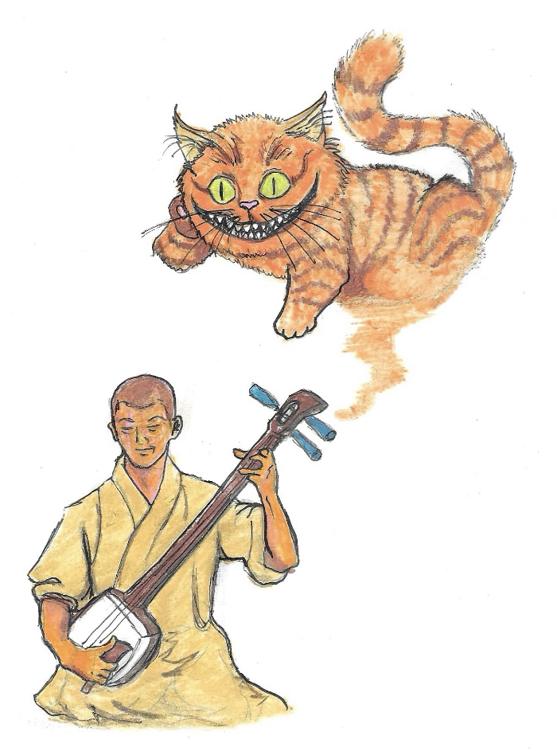

猫の望み

遥か昔、江戸時代、宮島のとある丘で…
桐島というお坊さんがいて、彼はいつも日没後、夜遅くまで三味線の練習をしていたんだ。その夜は特に静かで、風の音さえ聞こえず、木々の葉が動くのも聞こえなかった…
満月の夜更け、弦楽器を弾き始めた彼の前に突然、ジン・茶トラの猫の姿が現れた。
『痛い、痛い、痛い！』
『どこが痛いいのか？』
『そんな不器用なやり方で私の肌をもてあそぶのはやめてくれにゃん！』
『あなたの皮？』
『そう、その三味線は私の皮の残骸から作られたもので、あなたが私を呼び出した以上、3 つの願いを叶えるのが私の務めだにゃん』
『へーー。。。そうですか？』
『そうにゃん、でも警告しておきますが、あなたが求める願いは、あなたが望む効果をもたらさないかもしれません。』
『なるほど……少し考えさせてください…』
桐島は苦悶の表情を浮かべた。
『にゃーん、お腹がぺこぺこにゃん。。。』と猫が言った。
『私は決心した。私の最初の願いは、三味線の最高の音楽家として記憶されることだ。』
『願いが叶ったにゃん！』
『私の 2 つ目の願いは、私が死んだ後、家族に大切なものが何も足りないものがないようにすることだ。』
『面白いにゃん！完成です。』
『最後に、3 つ目の願いは、あなたの魂が安らかに眠れるようにということです。』
『あー！ワクワクします、どうもーにゃん！』
その後、だんだん猫も三味線も消えていった。
それから数世紀後、この僧は古代最高の三味線奏者として記憶されるようになったが、彼の家は破産し、富と名声をすべて台無しにしてしまった。